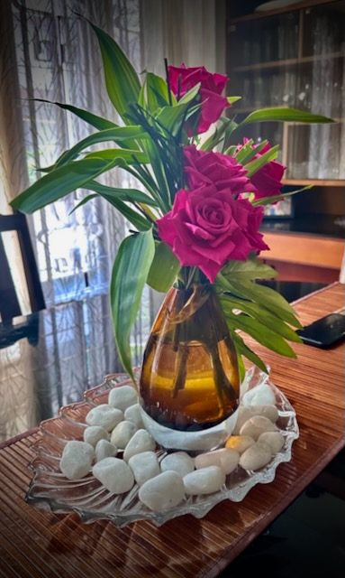

Home
Random Observations
Post-Modern Literary Criticisms
Biography
☾

My Essays on Life, Literature, and Everything else.
—Professor Lilly Cherian
Random Observations
→
Post-Modern Literary Criticisms
→